Wow, July really flew by huh? The 4th feels like just the other day...
Anywho, we've just stopped for a brief charging rest in Tomah, WI. It's a teeny little town that is very typical of the Midwest.
Because July just rushed on by, my last post was back when we were just entering Colorado. They don't call it Colorful Colorado for no reason--my oh my, what a beautiful state. We began our tour by heading southeast from Grand Junction to Black Canyon of the Gunnison National Park.


A view of the flatland on the north side. This is from the south side, where we first visited.
Black Canyon was formed by a river going down the 5th steepest mountain slope in North America. The river swiftly cut a slender canyon through the hard granite, quartz, and pegmatite (a reddish, ferrous mineral that mixed with the quartz to make some beautiful stones) creating a colorful, multiple-thousand-foot drop that sometimes is only 40ft wide.

This is from the north side, where we went the following day.
While in Grand Junction, I got in touch with my aunt who lived in Colorado for most of her life! She was staying with my cousin at their house in Crested Butte, just a short drive from Gunnison! Our plans were diverted, for what may be the most charming little valley town in all of the Americas.

Welcome to the Rocky Mountains.
The town of Crested Butte is a teeny grid of too-cute homes centered around the picturesque (although not pictured) Elk Avenue. Surrounded by incredible outdoorland, the town is abundant with eager, active folk all too happy to strike up some small talk. While we were there, my aunt and cousin reminded us what family was all about (even though I hadn't seen them in probably over a decade!) and we got some much-needed R&R (despite the efforts of my young second-cousins). We also got some much-needed pet time.
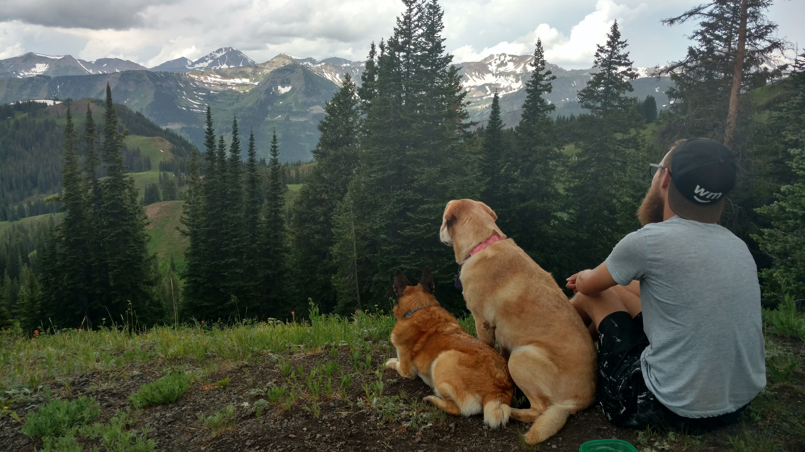Say hello to Loula (L), and Siminy (R)!
Showered, rested, refreshed by the mountain air, and all our laundry done, we it was time for our tour-de-Colorado to commence once more. We were taking a pretty unusual route from Crested Butte to Boulder (although, the "usual" route requires driving at least 30 miles on dirt mountain roads...), heading back to Gunnison before striking further south towards Durango, Cortez, and the Colorado/Utah border. Why back to Utah? More Pueblo ruins, of course.

On the way we encountered the lovely Red Mountain. We could only guess that iron had created the bright, red pigment.
Our first archaelogical destination was Mesa Verde National Park, the only national park to protect cultural ruins of the American first nations. It was incredible place, boasting a veritable city of cliff-dwellings dotting the landscape.
There was the Cliff Palace:
 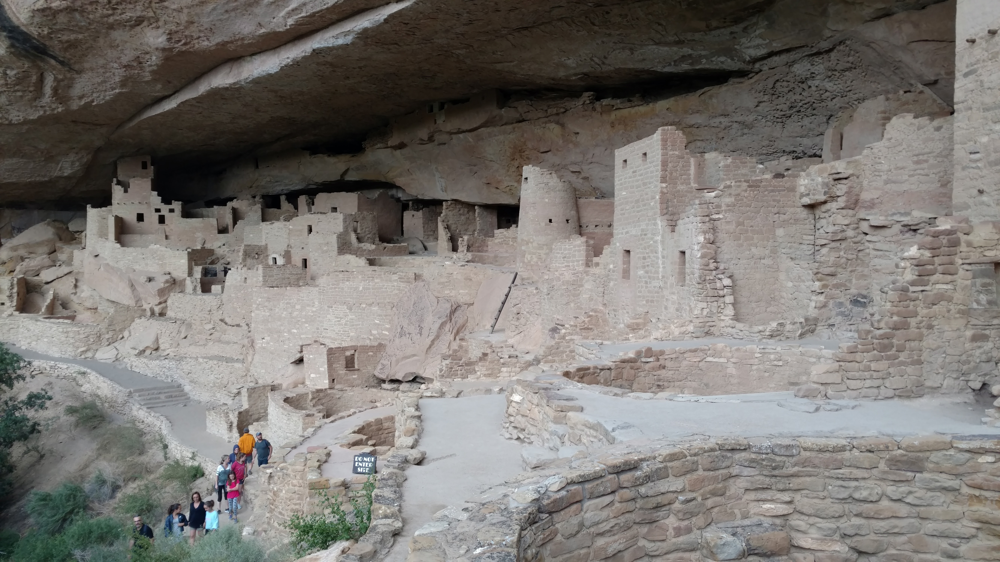
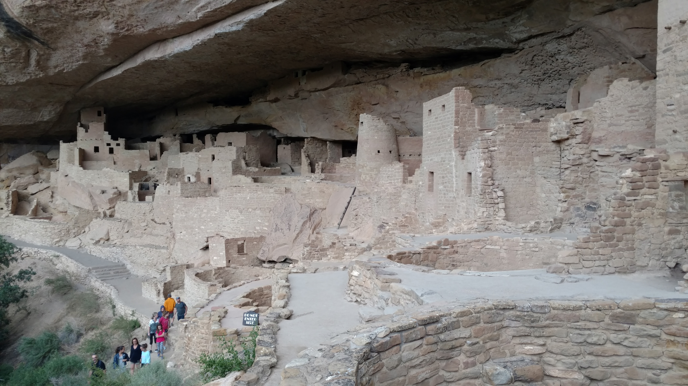
Long House:

and our favorite, Balcony House:

It's hard to tell from this picture, but this was the view from the Balcony:

After a few days in Mesa Verde, we headed further west towards Canyons of the Ancients and Hovenweep National Monuments. These two monuments overlap one another, protecting another series of Pueblo castle ruins that are centered at Square Tower Valley in Hovenweep.
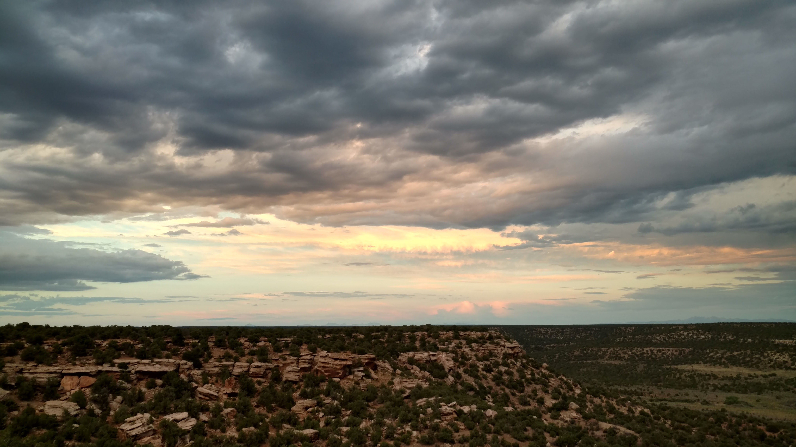Here was the pretty view from our campsite just outside Canyons of the Ancients. If you look very carefully, you might be able to see the Painted Hand Pueblo in the bottom left-ish (it was a 5 minute hike from where we were sleeping!!! Very cool)
Then it was eastward bound once more. We skirted across the south of the state, blindly driving across the the Great Divide, when the Great Sand Dunes crawled towards us over the horizon. As per our combined nature, we climbed the highest dune we could immediately see and watched all the little dots of people below.

From the bottom

From the top. Unusually green over there, no? It's because of the elevation, and the storms that get trapped around that range (that's the southeastern wall of the Great Divide, after all)
Afterwards, we splashed in the sandy, super-soft Medano Creek
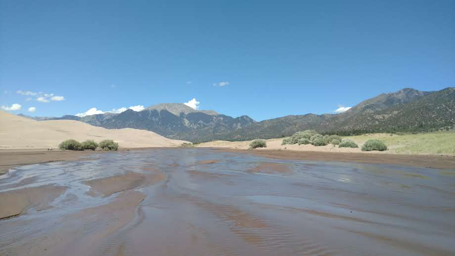After the Dunes, we left the Great Divide and cleaned up in the city of Pueblo. We had crossed to the east of the Continental Divide for our first time since January. It was time to see some friends.
Hurrying up the Front Range through Denver, we were soon in the mythical city of Boulder, Colorado. In a blur of friends, family, hospitality, fun, and adventure, we hung out with: Lacey's friend from high school/college Chelsea, and her boyfriend Rob; my friends from high and elementary schools, Matt and Mark (and his girlfriend, Kylie); my aunt, the same from Crested Butte, and a different cousin; all of their families, friends, and people we met while hiking, working, and exploring. It was an incredible time.
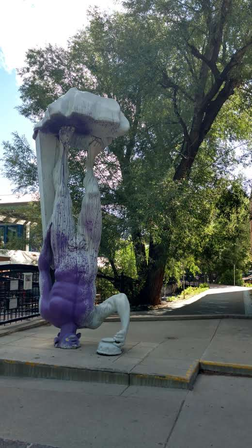Some funny art outside of the adorable Dushanbe Tea House that Chelsea and Rob took us to

Some wildflowers in a short hike we went on

We went to the Denver Cat Company, an incredible business filled with adorable, playful kitties
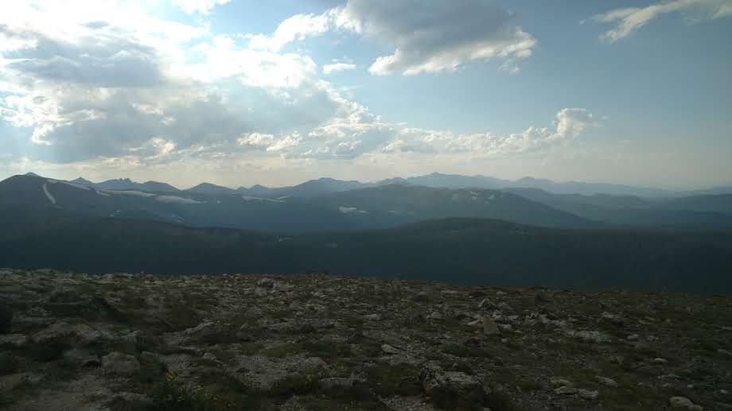The High Point of the Rocky Mountain National Park road, near Estes Park. Mark and Kylie took us here, but the altitude (over 12000ft!), cold, and rain made it a short visit
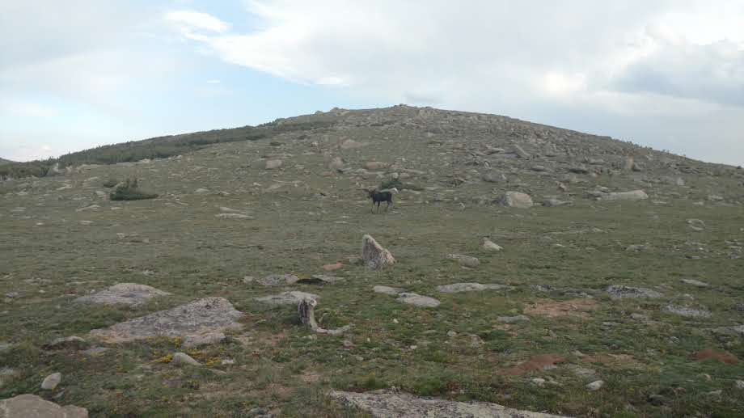A moose we saw in Rocky Mountain NP! The first (living) one we've seen in the trip! Look carefully, and you'll see a lot of elk, too
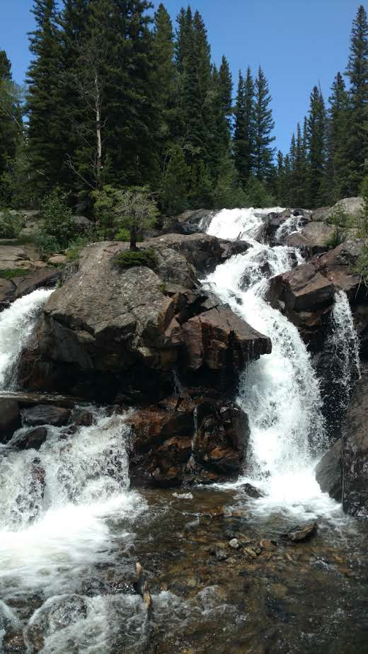A waterfall we hiked to near the quirky town of Nederland

Lost Lake, upriver from those falls
After all the fun in Boulder, it was a strange mix of dread and excitement in the car as we departed on what is the last month or so of our journey. We made good time into Wyoming, and soon found ourselves at the Devil's Tower.
 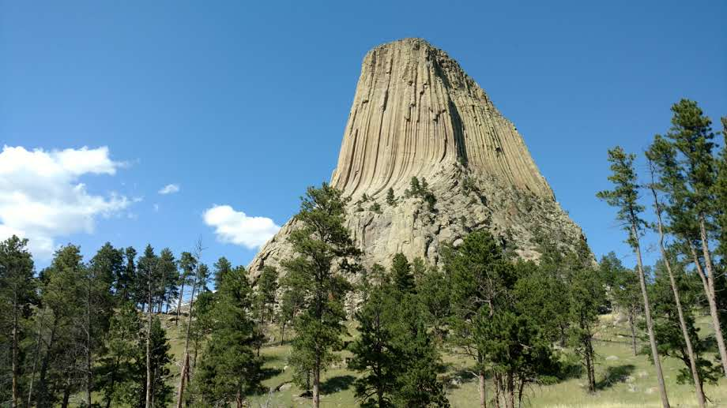
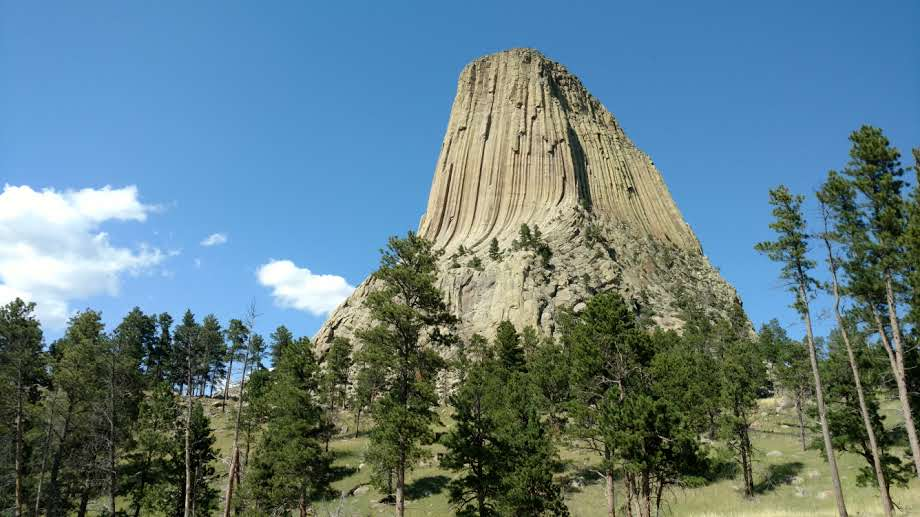
While the origins of the Tower are still a bit of a mystery, the prevailing theory is that the butte was created through lava upheaval through a small, ridged fracture in the crust while the nearby igneous Black Hills were forming. I like to think it's the stump of a billion-year-old tree. To each their own.
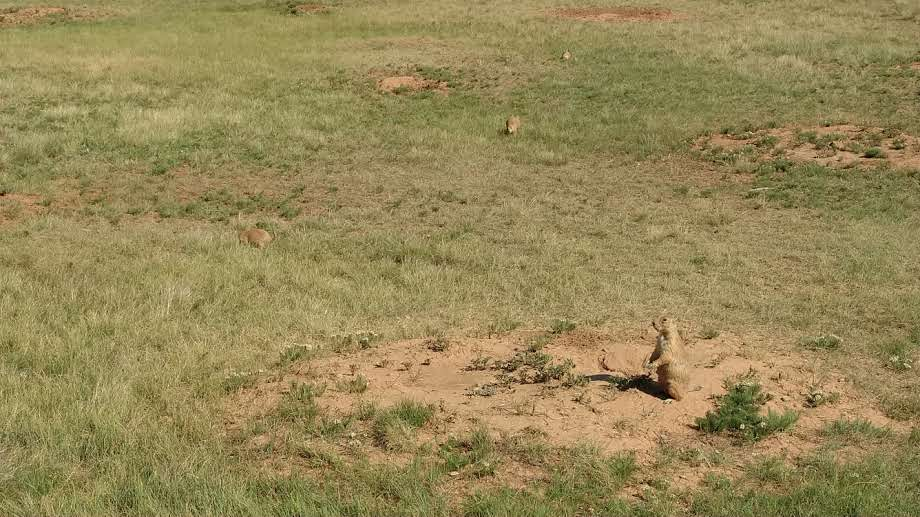
Some animal buddies we made while we were there.
Then, we crossed over into South Dakota, passed quickly through the biker Mecca known as Sturgis, showered at Rapid City, and ventured into the Black Hills, home to Mount Rushmore:

Not pictured is the even-larger Mount Crazy Horse, as well as Jewel Cave National Monument and Wind Cave National Park. The two caves are winding, hundreds-mile-long channels through limestone that are mind-boggling in scale. Each was home to its own native formations that were astounding and beautiful. Cell phone cameras just do not do caves any justice, so you'll just have to see them for yourself!
After the Black Hills we headed to some agate beds in Fairburn, SD, to see what exactly agate beds are! The beds were on the western edge of Badlands National Park, but we had to journey clockwise around the perimeter to enter the park. We camped in an incredible spot overlooking the Badlands themselves, and were woken by nomadic visitors at sunrise:
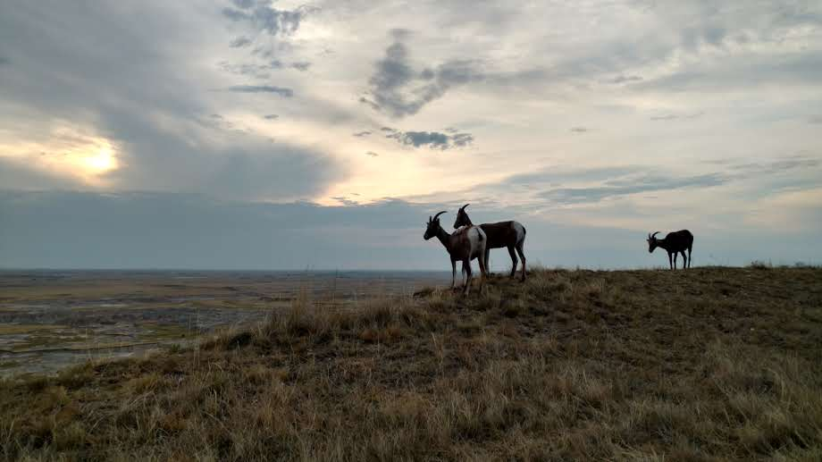"We are the Mountain Lords, traveling across the Baaaahdlands."
The Badlands were incredible, rainbow-striped lands in the grassiest-desert either of us had seen so far. They were not at all what we expected, and despite the rainy weather we were captivated by the beauty of nature.


Stripes of pink and gold, far as the eye can see
After the Badlands, it was about 5 hours of driving to take us to Sioux Falls, the easternmost city of South Dakota. We showered there, then camped by a tranquil lake this morning in Minnesota before crossing into Wiscosin this afternoon. I'm hoping to revisit a nostalgic land of my youth, that I haven't seen in over 5 years: Fontana-on-Geneva, WI. From there we head to Chicago to visit my sister and some friends from high school, then onward to Mammoth Cave in Kentucky! With so much traveling to do, and so little time to do it... there's a lot of driving in our future. Fun fun.
Thanks for reading, my next post may be the last of my journey! But hey, that might mean I actually blog more often. Haha! Love you.
Mileage: 29200
Weather: Grey, rainy, 67F
Currently listening to: Flamingosis - A Groovy Thing